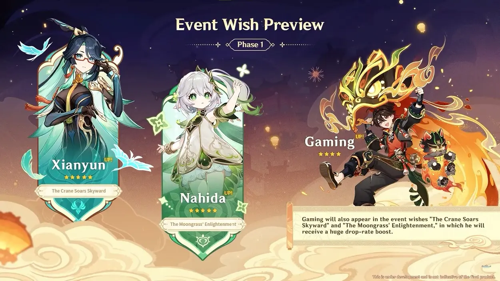
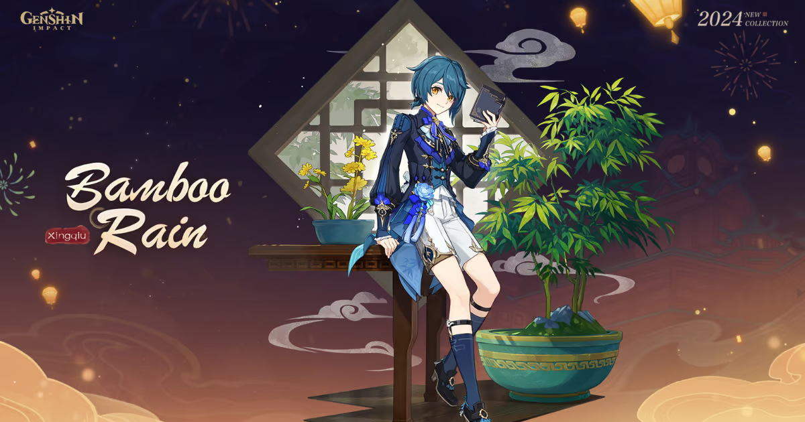
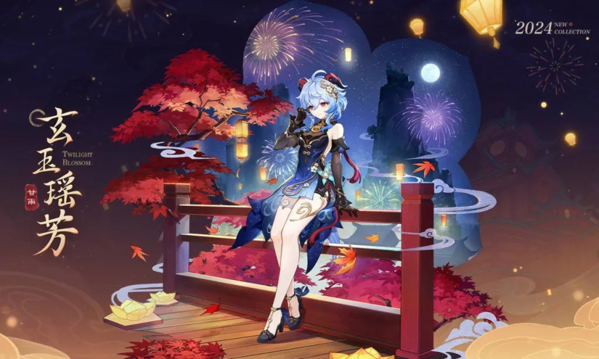
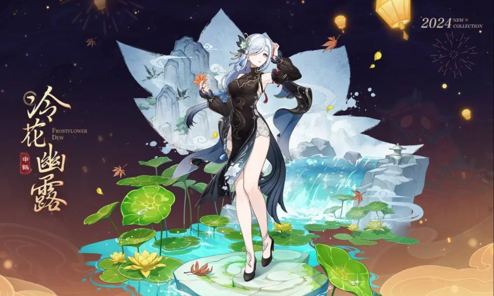

Genshin Impact 4.4 was released on January 31, 2024, around one week before the year's Chinese New Year. The update features Xianyun and Gaming's release, as well as the yearly Lantern Rite events with new skins!

New Skins! Xingqiu, Ganyu, Shenhe


